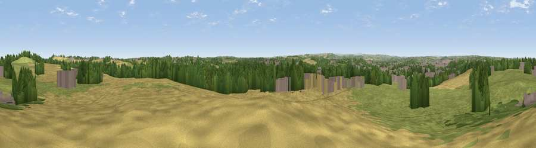

Viewpoint near Heath
#21188 in England · top 29% of its area beats it · near Heath · path 294 mWhere it is
The exact computed spot (SE 35925 19325). Click the marker for map links.
Public access: the nearest public right of way is about 294 m away — the final stretch may cross private land. Computed from Natural England's CRoW access layer and OpenStreetMap rights of way — not the legal definitive map. Always verify locally.
The view, rendered

A 360° render of this exact spot computed from the terrain model, tree cover and land cover — summer colours, afternoon light, calibrated against photographs of famous viewpoints. Real trees, hedges and buildings will differ in detail.
The panorama
Grey silhouette: terrain skyline in each direction (720 bearings, Earth curvature and refraction included). Dashed green: skyline with trees (+15 m) and buildings (+8 m) as obstacles. Blue strip: how far the ground is visible on each bearing.
Where the view opens
Wedge length = distance to the farthest visible ground on that bearing (vegetation-aware). Rings at 10, 25 and 50 km.
What fills the view
43% grassland · 26% cropland · 20% woodland · 10% built-up
Angular shares of the visible panorama (visual magnitude), not map area. Landscape diversity 0.57 (0–1 Shannon).
Key numbers
More beautiful places nearby
The staircase of upgrades: each row has a higher view potential than everything closer. Driving times are estimates from straight-line distance, calibrated against real road routing — check an actual route before setting out.
| Place | Direction | Drive | Score |
|---|---|---|---|
| Viewpoint near Kirkthorpe | NNE · 1 km | ~3 min | 51.4 |
| Viewpoint near Warmfield | NE · 2 km | ~5 min | 58.3 |
| Viewpoint near Hollingthorpe | SW · 7 km | ~14 min | 60.9 |
| Viewpoint near Woolley | SSW · 8 km | ~16 min | 66.2 |
| Viewpoint near Grange Moor | WSW · 14 km | ~25 min | 69.8 |
| Viewpoint near Hoylandswaine | SW · 18 km | ~31 min | 71.8 |
| Viewpoint near Hoylandswaine | SW · 18 km | ~31 min | 72.7 |
| Viewpoint near Jackson Bridge | WSW · 22 km | ~36 min | 73.5 |
53.66917, -1.45773 · source: screening · position refined by local search. Computed location — check access rights before visiting.